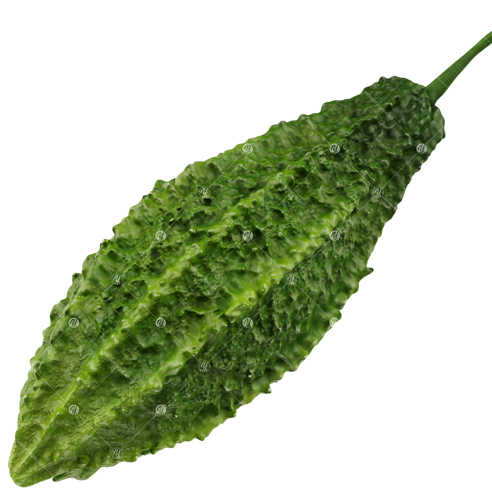

Where our diseases came from:
The diseases on our list have been gathered by searching the health benefits of bitter gourd. A few examples from our list are diabetes, asthma and cancer.
Where our compounds came from:
Our compounds list is based on the compounds named in 2 papers. The first by Horax et al(Horax, Hettiarachchy, & Islam, 2005), The second one by Cuong et al.(Cuong, Kwon, Jeon, Park, & Park, 2018, pp. 1–3)
first article: Horax, R., Hettiarachchy, N., & Islam, S. (2005). Total Phenolic Contents and Phenolic Acid Constituents in 4 Varieties of Bitter Melons (Momordica charantia) and Antioxidant Activities of their Extracts. Journal of Food Science, 70(4), 1–6. Retrieved from https://www.researchgate.net/publication/227608190_Total_Phenolic_Contents_and_Phenolic_Acid_Constituents_in_4_Varieties_of_Bitter_Melons_Momordica_charantia_and_Antioxidant_Activities_of_their_Extracts
second article: Cuong, D., Kwon, S. J., Jeon, J., Park, Y., & Park, J. (2018). Identification and Characterization of Phenylpropanoid Biosynthetic Genes and Their Accumulation in Bitter Melon (Momordica charantia). Molecules, 23(2), 2–8. Retrieved from https://www.mdpi.com/1420-3049/23/2/469
What did we search for?
The searching method we used is called co-occurence. All of the diseases on our list are combined with all the compounds on our list, and these combinations are searched in our dataset.
What is our sunburst data?
The data in our sunburst is not all bitter gourd articles. We decided to start with more articles by first searching for the co-occurence of all combinations between our list of diseases and our list of compounds.